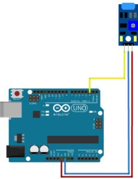

KY-002 Shock Vibration Switch Sensor

Описание
Основной элемент датчика – металлическая пружина гибкой структуры, расположенная во внутренней части трубки из пластика. При наличии каких-либо воздействий на нее она начинает колебаться. Усиление сигнала происходит за счет его подачи сначала на операционный усилитель, а потом на выход аналогового типа. Важным элементом датчика вибрации является потенциометр, который регулирует чувствительность прибора, и позволяет устанавливать необходимый порог срабатывания. Датчик вибрации имеет три выхода: • Земля; • Питание; • Выход аналогового сигнала А0. Находящийся на плате потенциометр позволяет настроить его чувствительность. Он представляет собой переменный резистор c сопротивлением регулируемого типа. На плате датчика также присутствуют светодиоды, которые сигнализируют о наличии питания. Кроме того, некоторые разновидности оснащаются цифровым выводом D0, который выдает логический ноль при достижении порогового значения уровня вибрации.Схема подключения
Код подключения
digitalWrite( enablePin, HIGH);
microDelay( 210);
if( digitalRead( outputPin))
{
objectDetect = false;
}
else
{
microDelay( 395);
if( digitalRead( outputPin))
{
objectDetect = false;
}
else
{
objectDetect = true;
}
}
digitalWrite( enablePin, LOW);